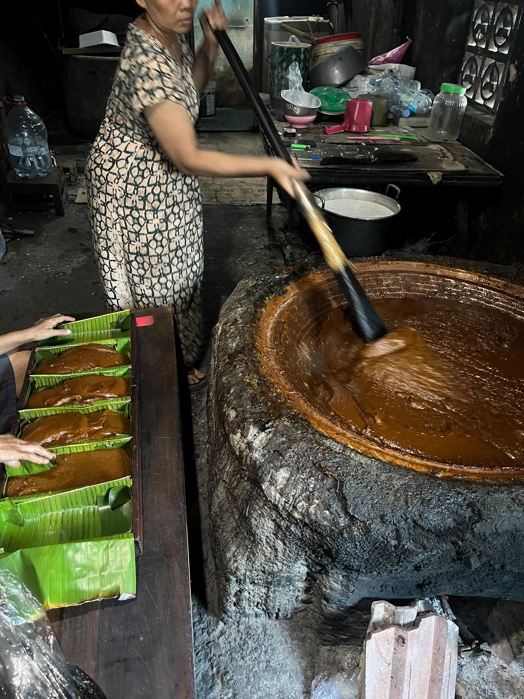

✦ KKN TIM II IDBU 64 UNDIP 2026
JELAJAH KENEP
Menelusuri karya, budaya, dan cita rasa.
Panduan wisata tematik interaktif untuk menelusuri kekayaan sentra batik warisan, kuliner olahan tradisional, serta jejak sejarah religi Desa Wisata Kreatif Kenep.

Sentra Batik & Culinary Heritage



Desa Wisata Kenep
Sukoharjo, Jawa Tengah